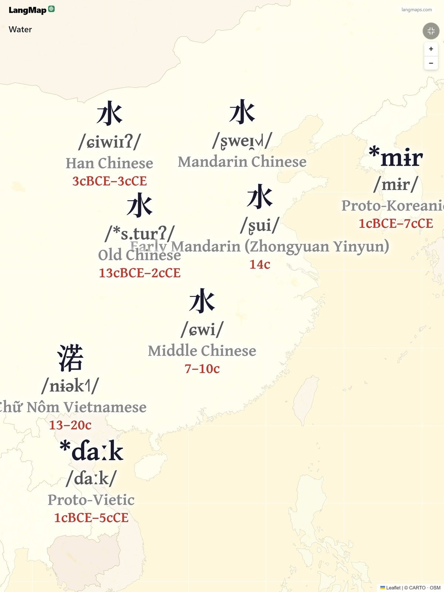

Sinosphere · · revised · Facebook post
Chinese Tones Were Not Always There
- Chinese tones were not always there.
- Old Chinese (上古漢語) probably had no tone system like modern Chinese.
- Some tones appeared later, as old consonants disappeared, and Vietnamese went through a strikingly similar process.

Contents
A consonant that became a tone
Mandarin speakers learn four tones. Cantonese speakers learn six. It is easy to assume Chinese has always been like this.
But Old Chinese (上古漢語) probably had no tone system like modern Chinese.
Many Old Chinese syllables ended in consonants.
Over time, some of those consonants weakened and disappeared.
But they left something behind: differences in pitch.
Those pitch differences gradually became meaningful, and eventually turned into tones.
For example, very roughly:
an old final *-ʔ helped produce the Rising tone (上聲)
an old final *-s helped produce the Departing tone (去聲)
The consonant disappeared, but its effect on the voice survived.
Follow one word: 水
The map at the top of this article follows 水 "water" through time.
Old Chinese (Baxter–Sagart): *s.turʔ
Middle Chinese: ɕwi, in the Rising tone
Early Mandarin (1324): ʂui
Modern Mandarin: shuǐ
The Old Chinese form ends in a glottal stop, -ʔ. In Middle Chinese that consonant is gone, and the word belongs to the Rising tone. Modern Mandarin shuǐ is in the third tone, the regular descendant of that Rising tone.
The idea that the Rising tone came from a final glottal stop was argued by Edwin Pulleyblank in 1962, and it became one of the key steps in explaining how an Old Chinese language without tones became tonal. The Departing tone is linked in the same way to an old final -s.
Four tones, and one that was not a pitch
The medieval rhyme books sort every syllable into four tones: Level (平), Rising (上), Departing (去) and Entering (入).
The fourth is revealing. The Entering tone was not really a pitch at all. It was the class of syllables that ended in -p, -t or -k. Cantonese still keeps those endings, as in 一 jat1. Northern Chinese lost them, and by the time of the Zhongyuan Yinyun rhyme book of 1324 their syllables were being redistributed among the other tones.
So even the old tone names still carry the memory of consonants.
A second split
Tonogenesis did not happen only once.
Middle Chinese also had voiced initial consonants, such as b-, d- and g-. When those voiced initials lost their voicing, the pitch difference they had caused stayed behind. Each tone split into an upper and a lower register.
Cantonese kept the split, which is why it has six tones (nine if the short checked syllables are counted separately). Mandarin went through a similar split but then merged much of it back down to four.
Again, the consonant contrast disappeared, and a tone took its place.
Vietnamese did it too
Vietnamese went through a strikingly similar process.
Vietnamese is not a Chinese language. It belongs to the Austroasiatic family, and many of its relatives, such as Khmer, have no tones at all.
But early Vietnamese is also reconstructed with fewer or no tones.
In 1954 the French linguist André-Georges Haudricourt showed how its tones could have arisen. Old consonant endings disappeared and helped create new tone distinctions: a final glottal stop on one side, a final -h (itself from older -s) on the other. Later, as in Chinese, a voicing contrast in the initial consonants split each tone into a high and a low pair, giving the six tones of modern Vietnamese.
Haudricourt also suggested that Chinese tones could have arisen in the same way, and the parallel is close: in both languages, a final glottal stop and a final -s each left a tone behind.
A tone is a consonant's echo
So tone is not necessarily something a language is born with.
A consonant disappears.
Its effect on the sound remains.
That effect becomes a tone.
This process is called tonogenesis, 聲調發生.
Chinese and Vietnamese are two famous examples of languages that became tonal over time.
The tones you hear today are the echoes of consonants nobody has pronounced for over a thousand years.